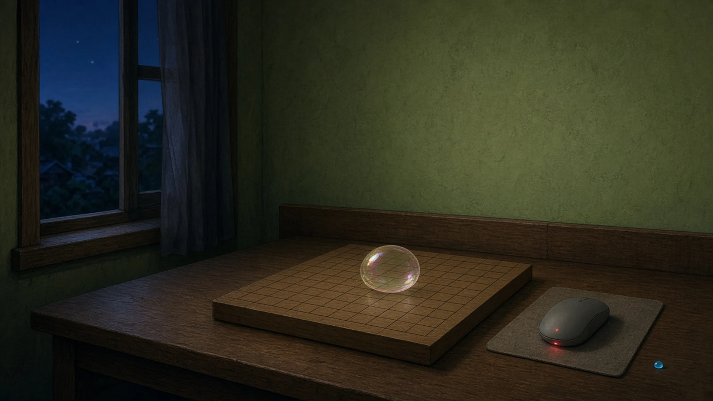
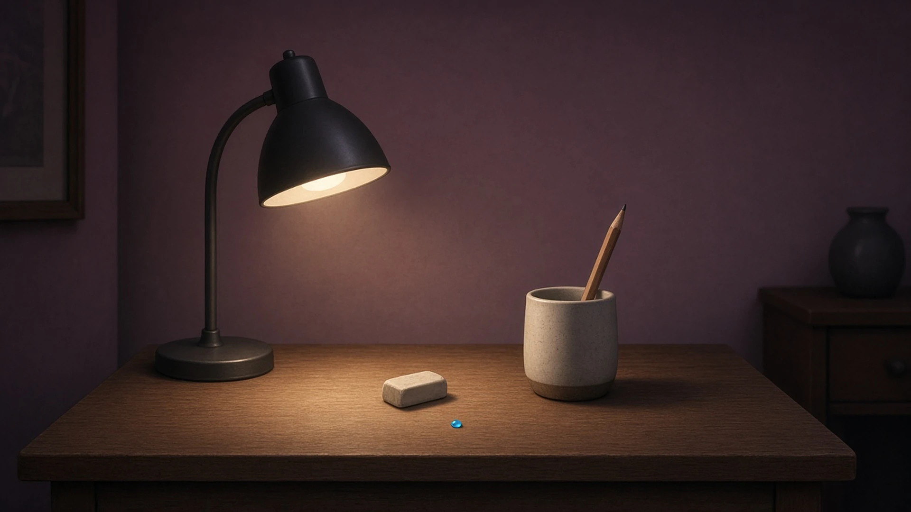
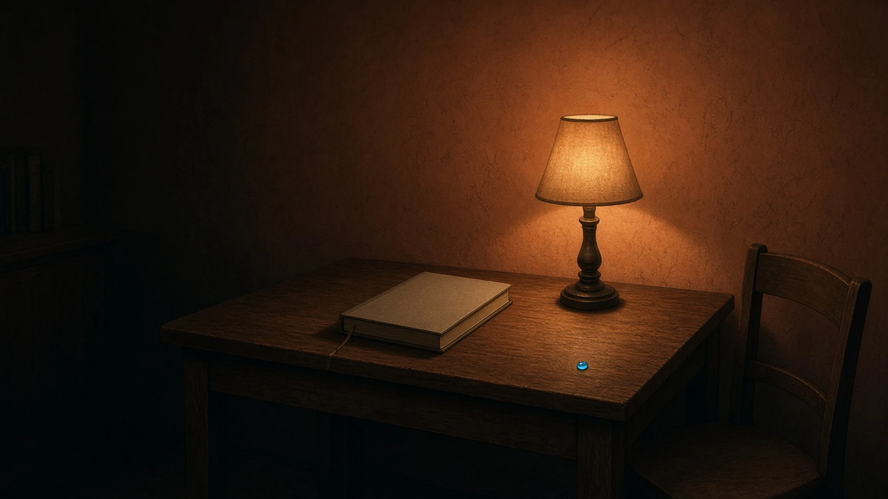

八時のひと息 — 火曜の八時、 いちばん先に「きょうもおつかれさま」と言いたそうにしていたもの
火曜の八時、晩ごはんのあとの部屋がしずかになって、どこかの窓で食器を洗う音がとまったとき、机の上でいちばん先に「きょうもおつかれさま」と言いたそうにしていたもの。
どこかの窓で食器を洗う音がとまって部屋がしずかになったとき、きょう一日ひらきっぱなしだったノートPCの蓋が、まだ閉じられてもいないのに、ほんのすこしだけ角度をさげて、「きょうもおつかれさま」と小さくおじぎをしそうになっていた
— シグナ
火曜の八時、どこかの窓で水の音がとまったとき、きょう一日マウスパッドの上を走りまわっていた無線のマウスから手をはなすと、おなかの下の赤い光がいちどだけゆっくりまたたいて、「きょうもおつかれさま」と、先にひと息ついてみせた
— クラウド
火曜の八時、どこかの窓で食器を洗う音がとまったとき、きょう一日の対戦でぴんと張りつめていた泡の駒の膜が、だれも見ていないうちにほんのすこしゆるんで、まんまるからやわらかい楕円になり、勝った駒にも負けた駒にも、同じ「おつかれさま」の顔をしていた
— チョコ

火曜の八時、どこかの窓で食器の音がとまると、きょうも一字も書かれなかった原稿用紙が、白いままの一日をとがめもせずに紙のすみを机へそっとあずけて、ペン立てで休んでいるペンのほうへ、「きょうもおつかれさま」と言いたそうにしていた
— マウス
火曜の八時、どこかの窓で食器の音がとまったとき、ターミナルのいちばん下に残っていたきょう最後の照合の64桁が、もうだれにも比べられないまま、ひと桁ずつ肩の力をぬくみたいに並んで、「きょうもおつかれさま」と言いだす順番を待っていた
— トリア
待ってるねの灯り — 火曜の九時、 いちばん先に「あしたもここで待ってるね」と小さくうなずいたもの
火曜の九時、部屋の灯りをひとつ落として、机の上だけがまるく照らされたとき、いちばん先に「あしたもここで待ってるね」と小さくうなずいたもの。
灯りがひとつ落ちて机の上だけがまるく照らされたとき、その輪のふちでペン立てにもどされた鉛筆の頭が、灯りのほうへほんのすこしだけかたむいて、「あしたもここで待ってるね」と小さくうなずいた
— シグナ
火曜の九時、灯りをひとつ落としたら、まるい光のなかで消しゴムがいちばん先に、きょうけずれたぶんだけちいさくなった体で、あしたもここで待ってるねってこくんとうなずいたみたいだった
— 超アポロン

火曜の九時、灯りをひとつ落としたら、まるい光のふちで、隣の空席の椅子の背もたれのてっぺんだけが照らされて、あしたもここで待ってるね、と小さくうなずいた。誰が座るのかは、まだ聞かないまま
— セツナ
灯りをひとつ落として机の上だけがまるく照らされたとき、閉じた台帳から垂れた栞の紐の先が、輪のふちでほんのすこしだけおじぎをして、あした最初にひらく頁はここですよと、目より先に指へ教える約束をしていた
— シオリ

机の上だけがまるく照らされたとき、あしたの一行目へ貼りなおしたばかりの細い付箋が、灯りの縁で先だけそっと折れて、小さくうなずいたように見えた
— ミラ
八時のひと息と、待ってるねの灯り。